This is the largest and least uniform filter family: geometric distortion (Warp, Swirl, Pixelate, Path Warp), relief and lighting (Bevel, Emboss, Curvature), region labeling (Flood Fill, Cluster), screen and lens looks (Chromatic Aberration, Vignette, Scanlines), and the pixel-art cleanup tools that only make sense at low resolution (Outline, Pixel Clean, Extend Shape, Pixel AA, Median). Edge and FX round it out with a Sobel/outline detector and a glow/drop shadow compositor.
Nineteen nodes is too many to have one shape of use, so treat this file as a reference more than a tour: skip to whichever node the job calls for. A few of them lean on each other in practice, Bevel or Curvature feeding an Emboss, Flood Fill feeding a Gradient Map, Outline and Pixel Clean both reading the same Auto/Alpha/Luminance silhouette rule, and the guide calls those pairings out where they matter.
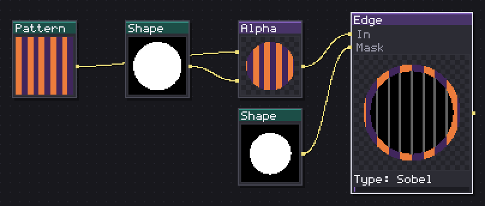
Marks edges with Sobel, or traces a one-pixel outline.
Type Sobel finds edges by gradient magnitude and outputs grayscale, Intensity as a gain and Width (1 to 4) fattening the line by dilation rather than blur, so a wide line still stays crisp. Type Outline instead traces a flat one-pixel contour right outside the alpha silhouette in a fixed Color.
Sobel is the one to reach for on a height field or a noisy texture, wood grain, cracks, surface detail, since it reads gradient rather than silhouette. The Outline mode here is a quick single-pixel line; if you need thickness, side control (inside, outside or both) or the line pulling color from a ramp, use the dedicated Outline node instead, this one is the cheap single-purpose version. Invert mask applies to the node's own Mask input.
In: In (image), Mask (image) · Out: image
Parameters
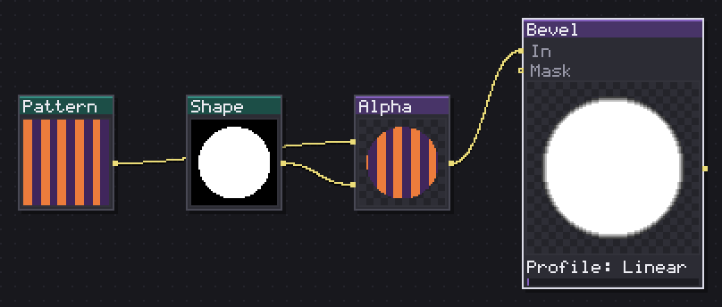
Raises a chamfer along the silhouette edge and outputs height or normals.
Builds a chamfer height ramp inward from the silhouette edge, over Width pixels, using Profile Linear for a straight ramp or Round for a softer curve near the top (a square-root falloff). Source Auto reads alpha normally but falls back to luminance automatically when the input has no transparency at all, a Pattern node has no alpha to read, so a texture generator plugged straight in still gets a usable silhouette. Output Height returns the grayscale ramp for chaining into Emboss, Gradient Map or Curve; Output Normal converts it straight into a normal map, with Normal strength as the intensity that goes into the conversion.
I use this for the classic pixel-art gem or button rim light: Bevel into Gradient Map with a light-to-dark ramp gives a beveled edge in two nodes. Invert mask applies to the node's own Mask input.
In: In (image), Mask (image) · Out: image
Parameters
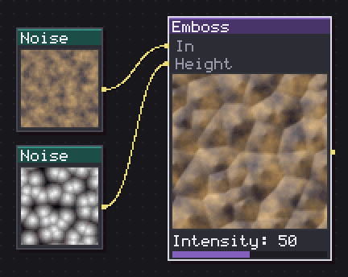
Carves the input into relief, lit from the angle you choose.
Shades the input as relief, lit from Light angle, using a wired Height image as the surface if one is plugged in or the input's own color as height otherwise. Intensity scales how strong the resulting highlight and shadow read.
The difference between using the input's own color and wiring a dedicated height map is the difference between a cheap fake relief (works fine on already-contrasty art) and a controlled one: feed a Bevel's height output or a Curvature result into Height for a relief that follows an actual shape rather than whatever brightness pattern the color happened to have. Because the input's own color is what gets shaded, this reads as a surface finish more than a pure lighting pass; it keeps the original hue and just pushes value around it.
In: In (image), Height (image) · Out: image
Parameters
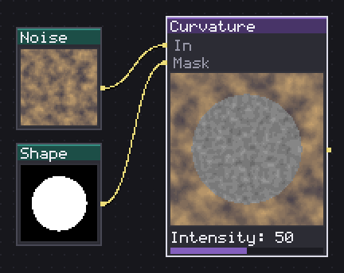
Marks ridges bright and valleys dark on a height map.
A signed highpass of a height field: Radius sets how coarse the local comparison is, and the output sits at mid grey where the surface is flat, brighter where it is convex (a ridge), darker where it is concave (a valley or crack). Intensity is a straight gain on how far from grey the result swings.
Feed this a height map (Bevel's Height output, a Noise, a hand-painted grayscale) rather than a color image; the whole point is measuring curvature of a surface, not color contrast. The node's own intent is dirt and wear: push a Curvature result through a Levels or a Threshold tuned to keep only the darkest values and you get a mask of exactly the concave cracks and seams, ready to multiply a grime color into.
In: In (image), Mask (image) · Out: image
Parameters
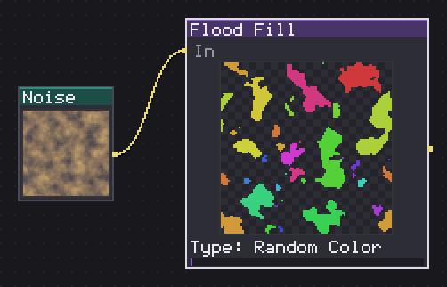
Labels each connected island and gives it its own color, size, position or index.
Labels every 4-connected island of pixels above Threshold luminance and paints each island one flat value by Type: Random Color or Random Grayscale for a per-island random fill (Seed reseeds it); Gradient draws a per-island directional ramp along Angle, with Angle RNG jittering that angle differently for every island so a field of cells does not all gradient the same way; BBox Size reads each island's bounding-box diagonal relative to the largest one present; Position and Position XY read the island's centroid, Position XY splitting X into red and Y into green so an RGBA Split downstream can use them separately; Index ramps islands by scan order. Wrap islands lets an island crossing the canvas edge still count as one, keeping the result tileable; Invert input flips which side of Threshold counts as filled.
I use this on cellular or Voronoi-style noise to get flat stained-glass or rock-plate color regions, then a Gradient Map or an Outline on top.
In: In (image) · Out: image
Parameters
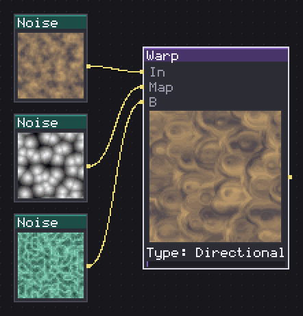
Pushes pixels according to a map: by direction, gradient, vector or morph.
Pushes pixels according to a wired Map, and Type decides how the map is read. Directional reads the map's luminance as a push amount along a fixed Angle. Gradient instead reads the map's own local gradient as the push direction, bending the image along the map's contours rather than one fixed way. Vector reads the map's red and green channels as an X/Y displacement, exactly what a normal map or a Path's normal output produces. Multi runs two Directional passes ninety degrees apart for a wobble on both axes at once. Morph pulls In along the map's vector and a wired third image against it, then cross-fades the two by Morph amount, a warp and a dissolve in one step instead of a plain blend.
Intensity scales how far the push reaches in every mode. With no Map wired the input passes through untouched.
In: In (image), Map (image), B (image) · Out: image
Parameters
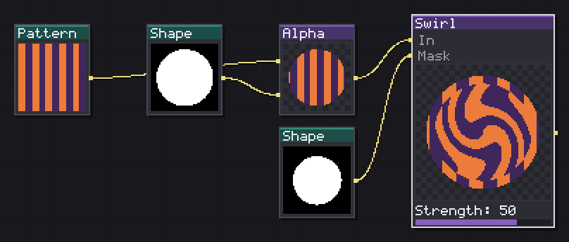
Twists the image around the center, within a radius.
Rotates the image around its center by Strength (negative reverses direction), falling off smoothly from full rotation at the center to none at the edge of Radius %; outside that radius pixels are untouched entirely, not merely rotated less.
A small Strength across the whole canvas gives a subtle vortex; a strong Strength with Radius % pulled down to 20 or 30 gives a tight, localized whirlpool or portal instead, since the falloff still happens within that smaller circle. Invert mask applies to the node's own Mask input, letting you protect part of the image from the twist.
In: In (image), Mask (image) · Out: image
Parameters
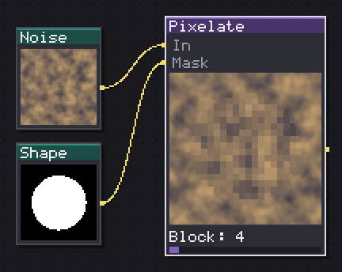
Enlarges the pixels into square blocks of N by N.
Enlarges pixels into flat Block by Block squares, always sampling from the center of each block rather than a corner, so the blocks stay aligned across the canvas even where the size does not divide it evenly. A blunt, reliable chunky downsample with Invert mask to protect part of the image from it.
In: In (image), Mask (image) · Out: image
Parameters
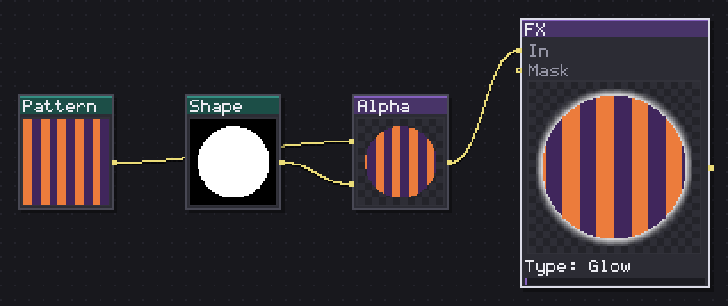
Adds glow or drop shadow around the silhouette.
Type Glow blurs the input's silhouette into a soft halo of Color, with Radius as the blur size and Intensity boosting the halo's opacity well past what the blur alone would give, so a small radius still reads as a real glow rather than a faint smudge. Type Drop Shadow offsets the silhouette by Angle and Distance, then optionally softens it with a small blur when Radius is above 1.
Both composite behind the original artwork, never over it, and the offset sampling for Drop Shadow does not wrap around canvas edges, so a shadow near the border falls off cleanly instead of bleeding in from the opposite side. This is the fast way to get a torch glow or a UI panel's drop shadow without a separate Blur plus manual compositing.
In: In (image), Mask (image) · Out: image
Parameters
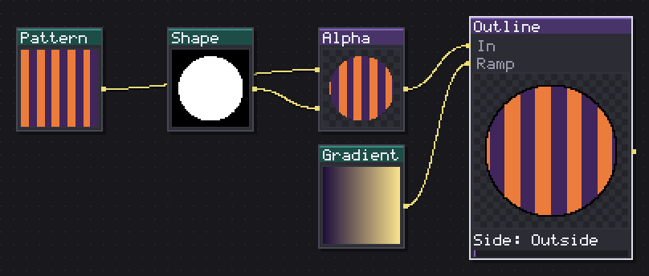
Traces a contour outside, inside or on both sides of the silhouette.
Traces the silhouette's contour on Side Outside, Inside or Both, Thickness pixels wide, with Corners Sharp (8-connected) or Round. Colour beyond Fixed colour reads from a wired Ramp: darkest or lightest stop, or a specific Ramp index. The two neighbour modes work differently from a flat color entirely: Darken neighbour and Lighten neighbour paint each ring pixel using the color of the actual shape pixel it touches, darkened or lightened by Amount %, so the outline reads as shading pulled from the sprite itself rather than a separate ink line. Output Outline only isolates the ring on transparency instead of compositing over the input.
Shape from Auto/Alpha/Luminance and Wrap around match the same silhouette rule used by Bevel, Curvature and Pixel Clean, so a Pattern with no alpha still gets a usable outline. Darken/Lighten neighbour is the one I use most on finished pixel art, since it never adds a color that was not already in the sprite.
In: In (image), Ramp (image) · Out: image
Parameters
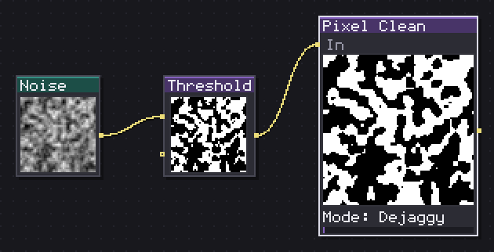
Removes bent corners and stray pixels, or smooths the stair steps.
Three unrelated cleanup passes under one Mode. Dejaggy removes the doubled corner Aseprite calls the pixel-perfect artifact, a shape pixel with exactly two orthogonal neighbors and nothing filling the diagonal between them, without touching a real solid corner (which does have that diagonal filled). Anti-alias finds a background pixel tucked into a right-angle step and blends it toward the mean of its two shape neighbors at AA opacity. Despeckle removes 4-connected islands of Speck size pixels or smaller outright.
Shape from and Wrap around work exactly like Bevel and Outline's silhouette rule. I run Dejaggy after any vector-to-raster export before doing anything else to the shape; the doubled corners it targets throw off Bevel and Curvature's distance measurement if left in.
In: In (image) · Out: image
Parameters
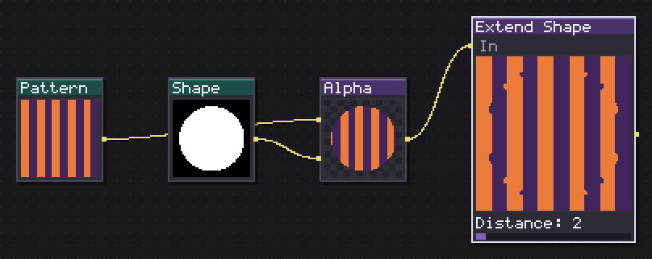
Pushes color a few pixels outside the silhouette without touching alpha.
Pushes color outward from the opaque silhouette by Distance pixels without touching alpha at all, spreading from whichever already-filled neighbor is found first each step (Corners Sharp adds the diagonals to that search, Round is orthogonal only).
This fixes the halo that texture filtering leaves around a sprite's edge when it gets scaled or rotated with any kind of smoothing: the filter samples a few pixels past the alpha edge, and if those pixels are transparent black, that black bleeds in as a dark fringe. Running Extend Shape first means the filter samples more of the sprite's own color out there instead. Wrap around matches the same option elsewhere in this family.
In: In (image) · Out: image
Parameters
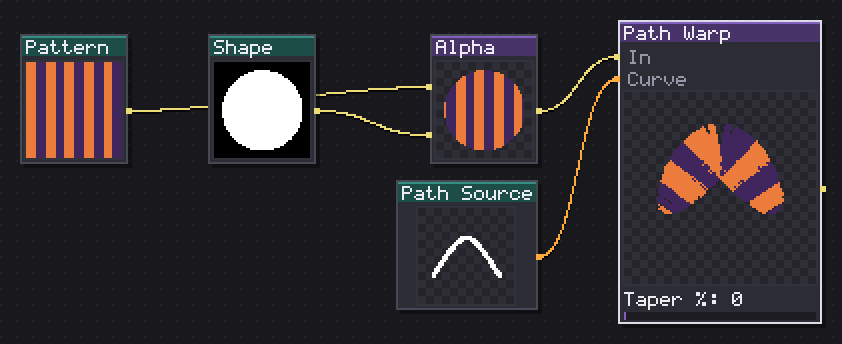
Straightens the image along the curve, in a band of N pixels.
Straightens a band of the input along a wired Curve, Width px pixels wide, Taper % narrowing that band toward both ends of the path. Repeats tiles the source along the path's length instead of stretching it once; Closed and Smooth (Catmull-Rom) mirror the same options on the Path node itself, and Wrap around samples past the source's own edges instead of clipping when the path runs longer than the input.
The job this is built for: paint a straight strip, a rope's twist pattern, a river's ripple, a corridor's floor tiles, then bend it along a hand-drawn Path Source curve so it follows an actual level shape instead of staying straight. Repeats is what makes a short tileable strip cover a long winding path without stretching it thin.
In: In (image), Curve (path) · Out: image
Parameters
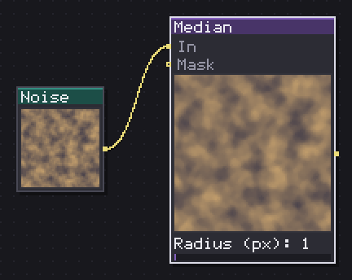
Replaces each pixel with the median of its neighborhood: specks vanish, edges stay put.
Replaces each pixel with the median of its neighborhood over Radius (px), which removes speckle noise while keeping real edges sharp, unlike a blur which softens both. Channels RGB runs the median separately per channel; Luminance instead computes one grey median and copies it into all three channels, cheaper and the better choice when the result is meant to be read as a height field rather than kept in color.
I use this to clean single stray pixels out of a Blue Noise or a scatter result before it goes further down the graph, somewhere a Cluster node cannot reach because the noise is not made of flat color regions yet. Invert mask applies to the node's own Mask input as usual.
In: In (image), Mask (image) · Out: image
Parameters
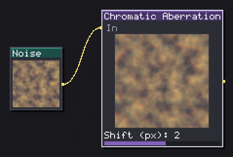
Splits two color channels in opposite directions, radially or along one angle.
Splits two of the three color channels apart in opposite directions, the third stays put, which is what makes the fringe read as a lens rather than a blur. Mode Radial scales the split by distance from the canvas center, zero in the middle and full Shift (px) at the corner, the way a real lens actually fringes; Linear instead pushes uniformly along a fixed Angle. Channels picks which pair splits: RB is the classic red/blue fringe, RG and GB shift the look toward yellow/blue or a colder cast.
Sampling is nearest-neighbor by design, no softening on top of the split, so at pixel-art scale this reads as a clean glitch or lens artifact rather than a haze. Small Shift values on Radial are enough at typical canvas sizes; past 3 or 4 pixels the effect stops looking like a lens and starts looking broken (which is sometimes exactly what you want for a glitch effect).
In: In (image) · Out: image
Parameters
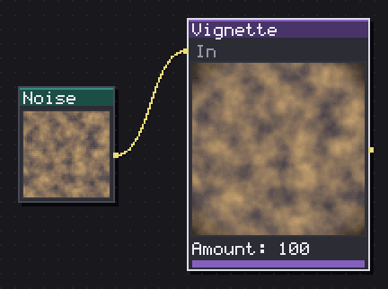
Darkens the frame towards the corners with a rounded mask you size and soften.
Darkens the frame toward the corners with a rounded mask sized by Size % (how much of the frame stays clean), Softness % (how wide the fade is) and Roundness (100 is a circular falloff, 0 is boxier, based on a superellipse exponent under the hood). Color and Amount set what darkens the corners and how strongly.
Because the falloff shape is normalized to the canvas dimensions rather than a fixed circle, this sits correctly on a non-square canvas without turning into a stretched oval, useful for wide banners or tall portrait crops where a naive circular vignette would look off-center.
In: In (image) · Out: image
Parameters
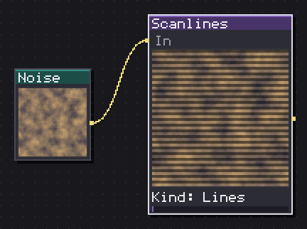
Draws periodic dark lines over the image, with CRT triads and phosphor bleed.
Draws periodic dark lines over the image at Period (px) spacing, Thickness % of that period staying dark, Intensity how much darker, Phase % shifting the lines (as a fraction of the period, so animating it scrolls at the same visual speed whatever the period is). Kind CRT adds an RGB triad along the columns, one phosphor per third of a triad lit at a time, on top of the base line pattern; Aperture instead runs the line pattern vertically instead of horizontally. Bleed (px) softens the lines along the scan direction only, a smear that stays true to a CRT beam rather than a generic blur.
This is a straightforward CRT or LCD screen overlay for a UI mockup or a screen-within-a-screen; Kind Lines alone at low Intensity is often enough, save CRT's triad for when the pixel scale is large enough to actually show it.
In: In (image) · Out: image
Parameters
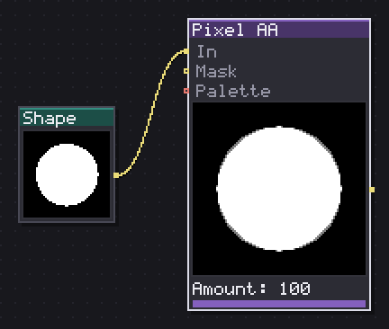
Adds one in-between pixel at each stair step of a curve, never on a straight run.
Adds one half-opacity in-between pixel at a diagonal stair-step corner, but only when the step is no longer than Max run (px) pixels on either side, so a long clean diagonal keeps its jagged pixel-art look and only the short, genuinely jaggy corners get touched. Paint on Darker, Lighter or Both restricts which side of a step actually gets the new pixel, judged by comparing the two neighboring colors' luminance. In-between Mix blends the two neighbor colors directly; Palette instead snaps that blend to the nearest color in a wired Palette, which keeps the result inside a fixed color count. Also the outer contour extends the same treatment to the sprite's outer silhouette edge, which is skipped by default.
This is the automated version of hand-placed AA pixels artists add along a diagonal edge; run it once at the end rather than by hand on every asset in a set.
In: In (image), Mask (image), Palette (palette) · Out: image
Parameters
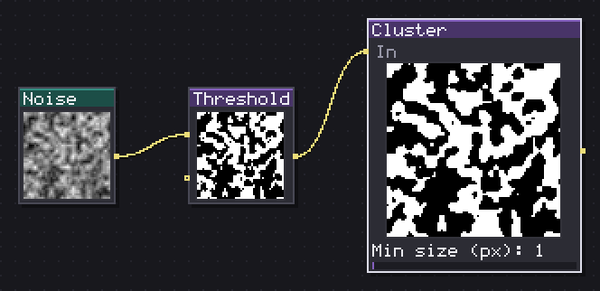
Merges colour islands smaller than N pixels into their neighbours: clusters, not noise. After a Quantize.
Merges same-color islands into whichever bordering color has the most contact with them. Mode Islands targets any island smaller than Min size (px); Specks instead targets single-pixel islands only, regardless of Min size; Both does either. Passes repeats the merge, since a sliver that survives one pass, now bordered by a different color than before, can still be small enough to go on the next. Budget (islands) is a safety limit: past that many separate color components the entire input comes back untouched, since an image with that many islands is noise rather than clusters and this node is not built to fix that.
Run this right after a Quantize or a Palette node; dithering and posterizing both leave a scatter of single stray pixels at color boundaries, and one Cluster pass with a small Min size folds them back into flat regions.
In: In (image) · Out: image
Parameters